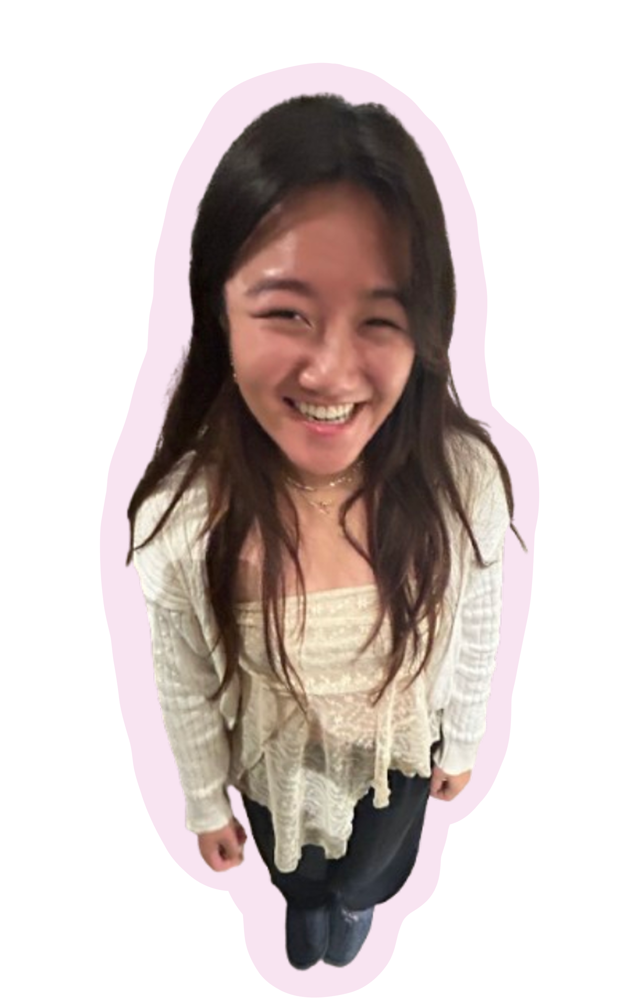
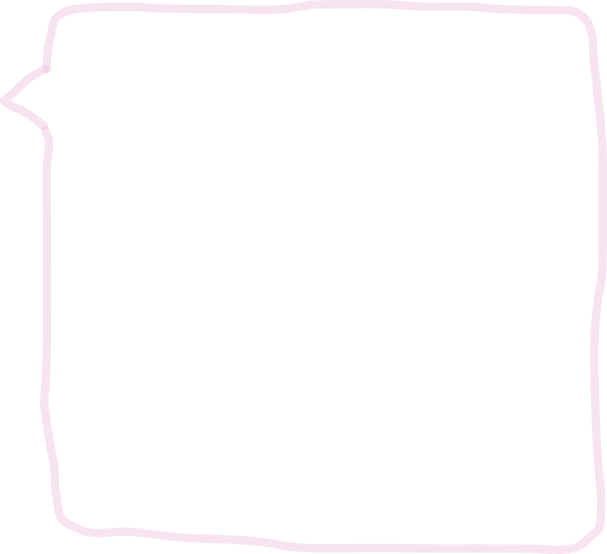
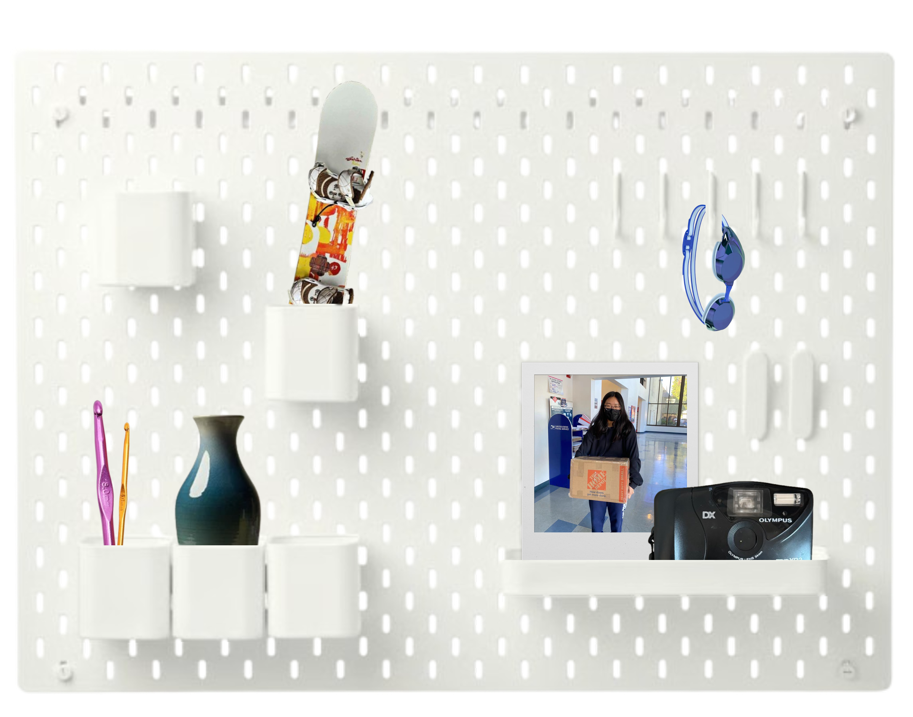

Hello!
My name is Erin Pan, a fourth-year Industrial Engineering and Operations Research & Data Science student @ UC Berkeley interested in all things data, product, and operations.
recent works.
A small collection of my design, tech, and 3D modeling work.
about.
A brief bio, get to know me!


Hello! My name is Erin Pan and I am a current 4th year at UC Berkeley studying Industrial Engineering and Operations Research with a minor in Data Science.
I'm interested in all things data, design, product, and operations—especially how they intersect for social impact.
Outside of studying, I can be found grabbing a Philtered Soul from Philz Coffee, watching a new kdrama in bed, or zoning out while listening to my favorite Spotify playlists.
my experiences.
Disney
June - August 2026
Technical Program Management Intern
TikTok
November 2025 - March 2026
Product Management Intern
ONGB
August - December 2025
Machine Learning Researcher
FireFox
August - December 2025
Full-Stack Design Consultant
Wells Fargo
June - August 2025
Marketing Analytics Intern
Eko Health
January - May 2025
Product Development Engineering Consultant
interests.
What I am passionate about/silly little hobbies.
